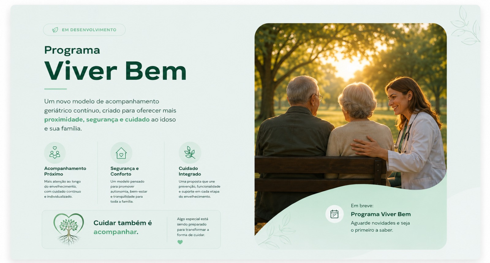
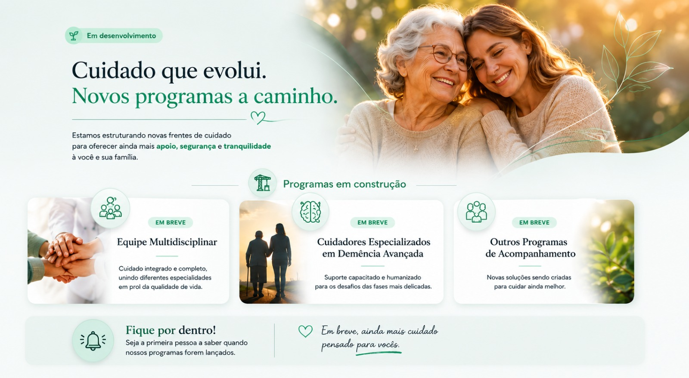

Mais do que tratar Doenças: Cuidar de Vidas
Suporte especializado para idosos e famílias que buscam segurança, atenção e cuidado verdadeiro.
Envelhecimento Saudável
Prevenção, Autonomia e Qualidade de Vida com acompanhamento
Avaliação Completa
Um olhar amplo sobre saúde, funcionalidade, memória, equilíbrio e qualidade de vida.
Cuidado Individualizado
Cada paciente é acompanhado de forma única, respeitando sua história, rotina e necessidades.
Acompanhamento Próximo
Mais atenção ao longo do tempo para orientar decisões e prevenir complicações.
Suporte à Família
Orientação cuidadosa para familiares e cuidadores em cada etapa do envelhecimento.
Em desenvolvimento



Dra. Aishá Wenzinger
CRM: 20473 | RQE: 19692
Sobre Mim
- Dra. Aishá Wenzinger: Clínica Médica, Geriatria e Cuidados Paliativos.
- Médica graduada pela Escola Bahiana de Medicina e Saúde Pública, com 17 anos de formação.
- Especialista em Geriatria pelo Hospital Santo Antônio – Obras Sociais Irmã Dulce.
- Possui especialização em Cuidados Paliativos pelo Instituto Paliar e ampla experiência em ambientes hospitalares, ambulatórios e atendimentos domiciliares.
- Reconhecida pela escuta qualificada, empatia no cuidado e compromisso com a medicina baseada em evidências.

Experiência Profissional
- Formação Médica: Escola Bahiana de Medicina e Saúde Pública – 2008
- Hospital Geral do Estado (HGE 2): Médica Clínica e Emergencista (2013-presente)
- Clínica NewLife: Médica Geriatra (2016-presente)
- Atendimento Domiciliar: Desde 2017